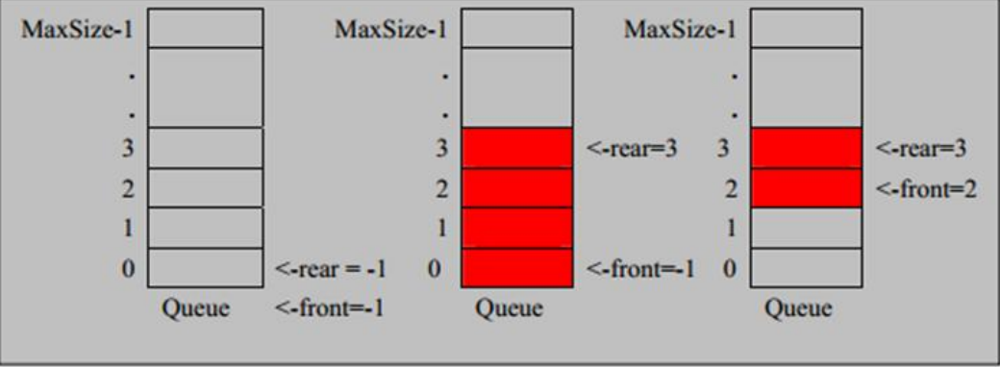

队列
1）队列是一个有序列表，可以用数组或链表实现
2）遵循先入先出的原则。即先存入队列的数据，要先取出。后存入的要后取出
3）示意图，使用数组模拟

数组模拟队列的思路
1、队列本身是有序列表，若使用数组的结构来存储队列中的数据，其中maxSize是该队列的最大容量
2、因为队列的输入、输出是分别从前后端来处理，因此需要两个变量front和rear来记录队列前后端的下标，front会随着数据的输出而改变，rear会随着数据的输入而改变
当我们将数据存入队列时称为“addQueue”,addQueue的处理需要有两个步骤：思路分析
1）将尾指针往后移：rear+1，当front==rear时，为空
2）若尾指针rear小于队列的最大下表MaxSize-1，则将数据存入rear所指的数组元素中，否则无法存入数据。rear==MaxSize-1，队列满
class ArrayQueue{
private int maxSize;
private int front;
private int rear;
private int[] arr;
public ArrayQueue(int arrMaxSize){
maxSize = arrMaxSize;
arr = new int[maxSize];
front = -1;
rear = -1;
}
public boolean isFull(){
return rear == maxSize -1;
}
public boolean isEmpty(){
return rear == front;
}
public void addQueue(int n){
if (isFull()){
System.out.println("队列满");
return;
}
rear++;
arr[rear] = n;
}
public int getQueue(){
if (isEmpty()){
throw new RuntimeException("队列空，不能取数据");
}
front++;
return arr[front];
}
public void showQueue(){
if (isEmpty()){
throw new RuntimeException("队列空");
}
for (int i = 0; i < arr.length; i++) {
System.out.printf("arr[%d]=%d\n",i,arr[i]);
}
}
public int headQueue(){
if (isEmpty()){
throw new RuntimeException("队列空");
}
return arr[front+1];
}
}
|

 wechat
wechat alipay
alipay